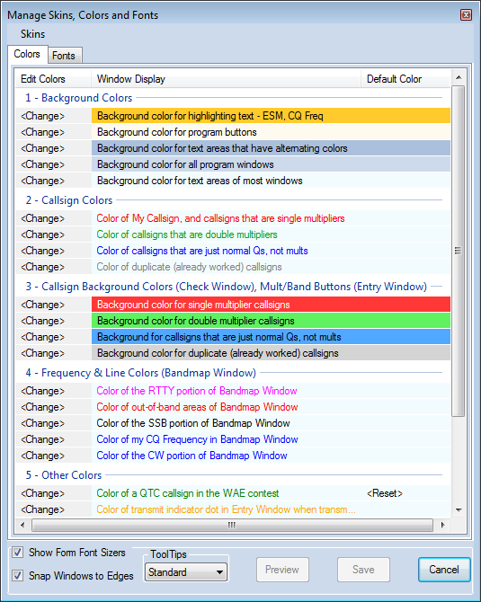
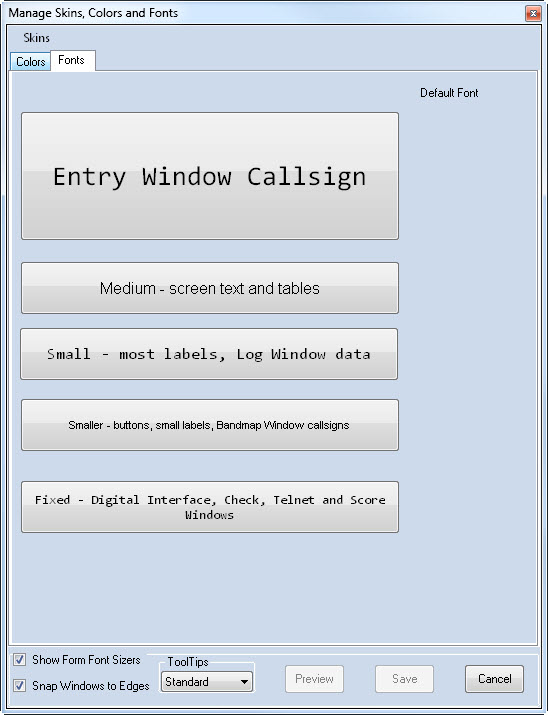
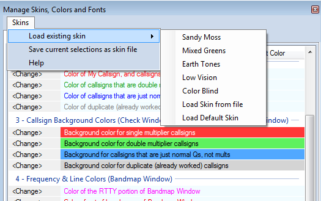
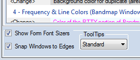
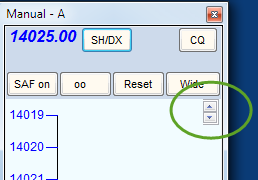
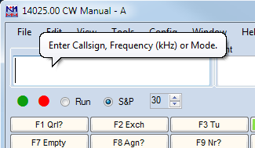

Skins, Colors and Fonts EN: Skins, Colors and Fonts
As configurações do N1MM Logger Plus permitem personalizar a maioria das fontes e cores usadas no programa. Para acessar a janela Manage Skins, Colors and Fonts, selecione Manage Skins, Colors and Fonts no menu Config da Entry window.

Colors Tab (Aba de Cores)
A aba Colors mostra a configuração atual de 24 cores do programa. Clicar no botão [Change] na coluna esquerda permite escolher outra cor. Se a cor escolhida for diferente da cor padrão do skin (veja mais sobre a cor padrão abaixo), um botão [Reset] aparece à direita. Clicar em [Reset] volta aquela cor ao valor padrão do programa, independente do skin em uso.
As configurações de cor se dividem em três categorias: Global, Compartilhada (Shared) e Dedicada (Dedicated).
- Cores Globais afetam toda janela do programa. Exemplos:
- Cor de fundo de todas as janelas do programa
- Cor de fundo dos botões do programa
- Cor de fundo das áreas de texto da maioria das janelas
- Cores Compartilhadas afetam várias janelas do programa. Exemplos:
- Cores de indicativo (dupes, QSOs normais, multiplicadores, multiplicadores duplos): afetam as cores dos indicativos no Bandmap, na janela de recepção da Digital Interface, e no campo de indicativo da Entry Window
- Em um exemplo de compartilhamento estendido, no Function Key Editor, linhas de Comentário usam a cor de Dupe do indicativo, linhas de mensagem de Run usam a cor normal de QSO, e linhas de mensagem de S&P usam a cor de Double Mult
- Cores de fundo de indicativo (dupes, QSOs normais, multiplicadores, multiplicadores duplos): controlam as cores de fundo na janela Check e nos botões do painel de bandas da Entry window
- Cores de indicativo (dupes, QSOs normais, multiplicadores, multiplicadores duplos): afetam as cores dos indicativos no Bandmap, na janela de recepção da Digital Interface, e no campo de indicativo da Entry Window
- Cores Dedicadas afetam apenas uma ou poucas janelas. Exemplos:
- Cores de frequência e linha afetam só o(s) Bandmap(s)
- Cor de fundo, cor do texto normal e Cor do Seu Indicativo se aplicam apenas às janelas DI Receive e CW Reader
- Cor do ponto indicador de transmissão na Entry Window — a cor que o ponto normalmente vermelho assume ao transmitir
Fonts Tab (Aba de Fontes)
A aba Fonts mostra a configuração atual de cinco fontes do programa. Clicar na descrição da fonte permite escolher a família e o tamanho padrão. Se a família e o tamanho escolhidos forem diferentes do padrão do programa (veja mais abaixo), um botão [Reset] aparece à direita da descrição. Pressionar [Reset] volta aquela fonte ao valor padrão do programa, independente do skin em uso.
Ao fazer grandes mudanças no tamanho das fontes, algumas janelas podem não se ajustar automaticamente ao novo tamanho. Pode ser necessário fechar e reabrir as janelas para o novo tamanho aparecer corretamente.

- Entry Window Callsign
Controla a família e o tamanho da fonte dos campos da Entry Window — indicativo, relatório de sinal e exchange do contest - Medium – Screen Text and Tables
Controla a família e o tamanho da fonte de avisos e mensagens especiais nas janelas Entry, Info e Multipliers - Small – most labels, Log and Network Status Window data
Controla a família e o tamanho da fonte das notas na parte inferior da janela Info, e das grades das janelas Log e Network Status - Smaller – Buttons, Small Labels, Bandmap Window Callsigns
Controla a família e o tamanho da fonte de todos os botões e abas do programa, notas na parte superior da janela Info, tabela de resumo na janela Available Mults and Qs, frequências e indicativos no Bandmap, e texto na janela Multiplier. Esta fonte é usada em todas as janelas do programa - Fixed – Digital Interface, Telnet and Score Windows
Controla a família e o tamanho da fonte das janelas Check, Telnet, Digital Interface Receive e Score Summary
A maioria das janelas tem um "Font Sizer" no canto superior direito. Use esse controle para deixar a fonte de uma janela específica maior ou menor que o padrão. Ele só muda a fonte principal daquela janela. Veja Show Form Font Sizers, abaixo.
The Skins Menu (O Menu Skins)
Clique no link no canto superior esquerdo.
Load Existing Skin (Carregar Skin Existente)

Skins são conjuntos de configurações que incluem família de fonte, tamanho de fonte e cores. O N1MM+ traz vários skins prontos (veja a captura de tela), que você pode escolher. Não é possível alterar esses skins prontos, mas você pode usá-los como base para criar skins personalizados.
Load Skin from File
Carrega configurações de fonte e cor de um arquivo .SKIN. Os arquivos precisam estar na subpasta SkinsAndLayouts da sua área de arquivos de usuário do N1MM+ (a indicada pelo menu Help > Open Explorer on User Files Directory).
Load Default Skin
Autoexplicativo — volta ao conjunto padrão de cores e fontes.
Save Current Selections as Skin File (Salvar Seleção Atual como Arquivo de Skin)
Depois de ajustar cores e fontes, você pode salvar as configurações em um arquivo .SKIN, guardado na subpasta SkinsAndLayouts da sua área de arquivos de usuário do N1MM+.
Do ponto de vista do processo, você não faz "mudanças de Skin" — você faz mudanças de Fonte e Cor. Comece carregando um skin parecido com o que você quer. Depois faça as mudanças de Fontes e Cores. Quando gostar da combinação, selecione >Skins >Save current selection as a skin file.
Pressionar o botão >Save depois de mudar Fontes e Cores preserva as mudanças feitas, mas não as grava em um arquivo de skin. O arquivo de skin original do qual você partiu não é afetado, a menos que você o sobrescreva com >Save current selection as a skin file.
Other Settings (Outras Configurações)

Ficam no painel inferior da janela, visíveis junto com qualquer uma das abas.
Show Form Font Sizers (Mostrar Ajustadores de Fonte por Janela)

Habilitar esta opção permite tamanhos de fonte individuais em janelas específicas, independente da configuração de fonte padrão. Quando ativada, controles de Font Sizer aparecem no canto superior direito das seguintes janelas: Telnet, Log, Available Mults & Qs, Multiplier, Digital Interface, Info, Check, Score Summary e Bandmap.
Snap Windows to Edges (Encaixar Janelas nas Bordas)
Habilitar esta opção facilita alinhar as janelas do programa umas ao lado das outras.
Tooltips (Dicas de Tela)

Tooltips mostram dicas úteis ao passar o mouse sobre certos pontos das janelas do programa. A opção no rodapé da janela Skins, Colors and Fonts permite escolher entre sem tooltips (depois que você já conhece bem o programa), tooltips "padrão" (geralmente uma linha de texto) e tooltips "balão" (que podem ter várias linhas). Tooltips são especialmente úteis nas janelas Bandmap e Available Mults and Qs, onde passar o mouse sobre um indicativo mostra a idade do spot, quem o enviou, há quanto tempo, e o que estiver no campo de comentário do spot.
Changing Font Size and Color in Windows' Title Bars (Mudando Tamanho de Fonte e Cor nas Barras de Título do Windows)
De Tom, N1MM – 2017-04-05
Usuários do N1MM+ têm feito perguntas e pedidos de recurso para mudar a aparência das barras de título da aplicação. Infelizmente, isso não é algo que a Microsoft deixa sob controle da aplicação. Encontrei duas coisas que você pode fazer para melhorar a aparência das barras de título.
- Esta é a importante. Vá em Configurações de Vídeo/Configurações Avançadas de Vídeo/Dimensionamento avançado de texto e outros itens/Barras de título, e ajuste o tamanho do texto e o atributo negrito como preferir. Quanto maior o texto, mais legível fica (especialmente em negrito), mas mais espaço cada janela do seu computador vai ocupar.
- Para mudar a cor de fundo das janelas *inativas*, veja o tutorial em tenforums.com sobre como mudar a cor da barra de título inativa no Windows 10. É preciso editar o registro do Windows e ter facilidade com conversão hex/decimal para conseguir. Não recomendado para a maioria dos usuários. De novo, isso afeta todas as janelas do sistema. Eu escolhi deixar minhas barras de título inativas com a mesma cor da janela principal do skin que uso. Note que a ordem das cores é BGR, e não RGB.